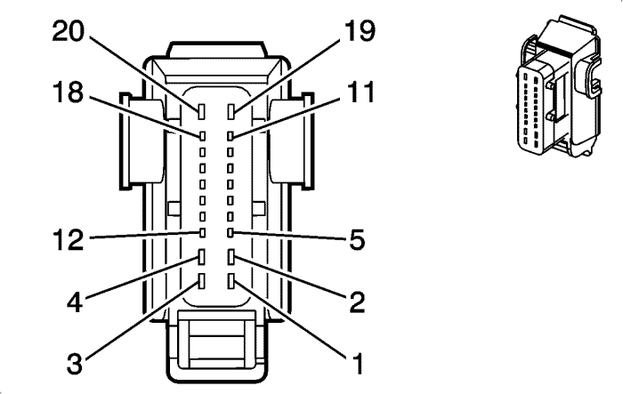

Orlando |
||||||||
|
|
|
|||||||
|
 |

|
Información de parte de conector
| Información de parte de conector
|
Información de parte de terminal
| Información de parte de terminal
|
Bulón | Cable | Circuito | Función | Bulón | Cable | Circuito | Función |
|---|---|---|---|---|---|---|---|
1 | -- | -- | No se utiliza | 1 | -- | -- | No se utiliza |
2 | 2,5 BN/D-BU | 2479 | Tensión de alimentación del elemento calefactor del asiento del acompañante (KA1) | 2 | 2,5 BN/D-BU | 2479 | Tensión de alimentación del elemento calefactor del asiento del acompañante (KA1) |
3 | -- | -- | No se utiliza | 3 | -- | -- | No se utiliza |
4 | 2,5 GY/BK | 2480 | Referencia baja del elemento trasero calefactor del asiento del acompañante (KA1) | 4 | 2,5 GY/BK | 2480 | Referencia baja del elemento trasero calefactor del asiento del acompañante (KA1) |
5 | 0,5 BK/OG | 1361 | Referencia baja del interruptor del cinturón de seguridad del pasajero | 5 | 0,5 BK/OG | 1361 | Referencia baja del interruptor del cinturón de seguridad del pasajero |
6 | 0,5 BK/GY | 2435 | Referencia baja NTC de la calefacción del asiento del acompañante (KA1) | 6 | 0,5 BK/GY | 2435 | Referencia baja NTC de la calefacción del asiento del acompañante (KA1) |
7 | 0,5 WH/GY | 2434 | Señal NTC de la calefacción del asiento del acompañante (KA1) | 7 | 0,5 WH/GY | 2434 | Señal NTC de la calefacción del asiento del acompañante (KA1) |
8 | 0,5 D-GN/OG | 2136 | Control bajo del módulo de impacto lateral delantero derecho | 8 | 0,5 D-GN/OG | 2136 | Control bajo del módulo de impacto lateral delantero derecho |
9 | 0,5 OG/YE | 2135 | Control alto del módulo de impactos lateral delantero derecho (AJG o AYC) | 9 | 0,5 OG/YE | 2135 | Control alto del módulo de impactos lateral delantero derecho (AJG o AYC) |
10 | 0,5 RD/GY | 402 | Voltaje positivo de batería | 10 | 0,5 RD/GY | 402 | Voltaje positivo de batería |
11 | 0,5 D-GN | 5060 | Datos de serie GMLAN de baja velocidad | 11 | 0,5 D-GN | 5060 | Datos de serie GMLAN de baja velocidad |
12 | 0,5 OG/VT | 1362 | Señal del interruptor del cinturón de seguridad del acompañante | 12 | 0,5 OG/VT | 1362 | Señal del interruptor del cinturón de seguridad del acompañante |
13 | 0,5 GY/OG | 1380 | Pretensor del cinturón del asiento del acompañante - Control bajo (A69) | 13 | 0,5 GY/OG | 1380 | Pretensor del cinturón del asiento del acompañante - Control bajo (A69) |
14 | 0,5 OG/BN | 1379 | Pretensor del cinturón del asiento del acompañante - Control alto (A69) | 14 | 0,5 OG/BN | 1379 | Pretensor del cinturón del asiento del acompañante - Control alto (A69) |
15 | 0,5 WH/BK | 7018 | Señal NTC del cojín (KA1) | 15 | 0,5 WH/BK | 7018 | Señal NTC del cojín (KA1) |
16 | -- | -- | No se utiliza | 16 | -- | -- | No se utiliza |
17 | 0.5 BK | 2450 | Toma de tierra | 17 | 0.5 BK | 2450 | Toma de tierra |
18 | 0,5 OG/BN | 7571 | Señal de aviso del cinturón de seguridad del acompañante | 18 | 0,5 OG/BN | 7571 | Señal de aviso del cinturón de seguridad del acompañante |
19-20 | -- | -- | No se utiliza | 19-20 | -- | -- | No se utiliza |
| © Copyright Chevrolet. All rights reserved |